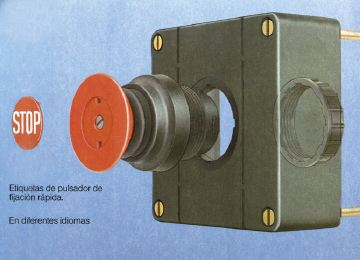
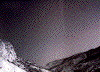
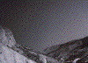
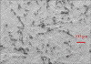
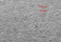

MOTTLING ODER BACKTRAP-MOTTLING
|
Beim mottling oder backtrap mottling handelt es
sich um ungleichmäßigen, wolkigen
Ausdruck aufgrund von partiell
ungleichmäßigem Penetrations- und
Rückspaltverhalten von Papier - insbesondere
von gestrichenem Papier. Entsprechend einer im
Papier bzw. im Strich vorhandenen Wolkigkeit oder
Fleckigkeit penetriert die Druckfarbe partiell
ungleichmäßig. Auf den Drucktüchern
der Folgedruckwerke im 4-farbigen Bogenoffsetdruck
bzw. auf den Gegendruckzylindern im
Bogenoffsetdruck mit Bogenwendeeinrichtung wird
dann das frisch gedruckte Druckergebnis
rückgespalten. Ist die Druckfarbenpenetration
in starkem Maße ungleichmäßig,
dann wird dies nach dem Rückspaltvorgang
dementsprechend als ungleichmäßige
Druckwiedergabe sichtbar (Abb. 1). Das mottling
tritt aufgrund der Zeitintervalle zwischen den
Druckwerken vermehrt im Bogenoffset auf. Im
Rollenoffset sind die Zeitintervalle zwischen Druck
und Rückspalten im Folgedruckwerk zu kurz, als
dass sich ein mottling entwickeln kann.
|

|
Abb. 1: Mottling bei einem 4-farbigen Druck.
|
|
|
|
Mögliche Ursachen:
|
|
|
|
Abb. 2: Ungleichmäßiger Ausdruck
einer Volltonfläche wegen Mottling.
|
|
|
|

|
|
Abb. 3: Beanstandeter Auflagendruck.
|
|
|
|

|
|
Abb. 4: Vergleichsdruck - nicht beanstandet.
|
|
|
|

|
|
Abb. 5: REM-Aufnahme des beanstandeten
Auflagenpapiers.
|
|
|
|

|
|
Abb. 6: REM-Aufnahme des Vergleichpapiers.
|
|
|
|

|
|
|
|
|
|

|
|
|
|
|
|

|
|
|
|
|
|
|
Beim Aufbringen der Streichmasse auf das Rohpapier werden
vorhandene Dickenunterschiede vorerst kompensiert. Beim
Kalandriervorgang wird aber die Strichschicht entsprechend
der Dickenunterschiede im Papier unterschiedlich stark
komprimiert, woraus ein partiell unterschiedliches Saug-
bzw. Penetrationsverhalten des Papiers gegenüber
Druckfarbe resultiert. Dieses partiell unterschiedliche
Penetrationsverhalten hat - wie oben bereits beschrieben -
unterschiedliches Rückspaltverhalten der frisch
gedruckten Druckfarbe zur Folge, was ein
ungleichmäßiges Aussehen von Vollton- und
Rasterflächen bewirkt (Abb. 2).
Sind die Ursachen des wolkigen Ausdrucks nicht auf mottling
zurückzuführen, können die in den Kapiteln
„Wolkigkeit“, „Strichaufbauen“ oder
„Abstoßen der Druckfarbe“ genannten
papierbedingten Erscheinungen als Ursache infrage kommen. Es
gelten dann auch die dementsprechenden
Abhilfemaßnahmen.
Weiterhin können im nicht-papierbedingten Fall die
gleichen drucktechnischen Ursachen wie beim Kapitel
„Wolkigkeit“ genannt werden. Diese sind:
- Fehlerhafte Zurichtung oder Spannung des Drucktuches.
- Benetzungsstörungen des Drucktuches.
- Zu geringe Druckbeistellung.
- Schlieren im Filmkleber bei konventioneller
Bogenmontage.
- Fehler bei der konventionellen Druckplattenbelichtung.
- Falsche Rasterwinkelung der Reprofilme und daraus
resultierende Moirébildung.
|
Mögliche Abhilfen:
|
|
Liegt bei gestrichenen Sorten eine partiell
ungleichmäßige Struktur vor, die zu mottling
führt, kann durch Einsatz einer langsam wegschlagenden
Druckfarbe dieser Effekt verhindert oder verringert werden.
Durch die langsam wegschlagende Druckfarbe kommt das
unterschiedliche Penetrationsverhalten des Papiers im
Kurzzeitbereich des Druckvorganges nicht zur Geltung; das
Rückspalten erfolgt dementsprechend
gleichmäßiger. Durch Zugabe von Öl oder
Paste in die Druckfarbe kann das Wegschlagverhalten
ebenfalls beeinflusst werden. Bei diesen Maßnahmen
muss allerdings gewährleistet sein, dass das
Wegschlagverhalten der Druckfarbe nicht zu langsam wird, da
ansonsten Ablegeerscheinungen im Auslagestapel und/oder
Trocknungsverzögerungen auftreten können.
Durch den Einsatz von Gegendruckzylindern mit einer
speziellen, farbabweisenden Beschichtung (meist Silikon)
kann das Rückspalten im Bogenoffsetdruck reduziert
werden.
Sind diese Maßnahmen ohne Erfolg, bleibt nur der
Wechsel auf eine andere Papiersorte.
Bei drucktechnischen Ursachen gelten die gleichen
Abhilfemaßnahmen wie unter dem Kapitel
„Wolkigkeit“ aufgelistet. Diese sind:
- Aufzugsstärke des Drucktuchs kontrollieren.
- Zurichtung des Drucktuchs kontrollieren.
- Gleichmäßigkeit der Benetzung des Drucktuchs
kontrollieren.
- Druckplatten bzw. Filme bezüglich Schlierenbildung
kontrollieren.
- Rasterwinkelung der Reprofilme kontrollieren.
|
Beispiel(e):
|
|
Mottling beim Druck auf halbmattes Papier:
Ein Autoprospekt wurde auf einer
10-Farben-Bogenoffsetmaschine im Schön- und Widerdruck
mit Bogenwendung gedruckt. Bedruckstoff: Halbmattes Papier,
135 g/m2.
Das Drucksujet bestand überwiegend aus
großformatigen Bildern mit Rasterverläufen in
empfindlichen Grautönen. Die Motive des Widerdrucks
ließen keine Beanstandung erkennen, die Motive des
Schöndrucks - also die Bogenseite, die nach dem
Wendevorgang noch 4 Mal auf den Gegendruckzylindern im
Widerdruck zurückgespalten wurde - zeigten dagegen
störende mottling-Erscheinungen in den
Rasterverläufen (Abb. 3).
Durch drucktechnische Eingriffe und durch Änderung der
Druckfarbe konnte das mottling nicht vermieden werden.
Letztendlich brachte nur der Papierwechsel ein
zufriedenstellendes Druckergebnis (Abb. 4). Das Erstellen
von Aufnahmen mit dem Raster-Elektronenmikroskop in der
FOGRA zeigte eindeutig, dass das beanstandete Auflagenpapier
eine partielle Ungleichmäßigkeit aufwies, die zu
den mottling-Erscheinungen führte (Abb. 5). An den
dunklen Stellen im Bild wird deutlich, dass an diesen
Stellen der Strich stärker komprimiert wurde als an den
benachbarten helleren Stellen. Dies hatte eine
ungleichmäßige Druckfarbenpenetration und
dementsprechend ungleichmäßiges Rückspalten
der Druckfarbe zur Folge.
Das Vergleichspapier, das ohne Beanstandungen bedruckt
werden konnte, zeigte dagegen eine gleichmäßige
Oberfläche (Abb. 6).
|
Allgemeine Hinweise:
|
|
Für den Reklamationsfall:
20 Blatt des unbedruckten Auflagenpapiers (DIN A4) und evtl.
des Vergleichspapiers sicherstellen.
Drucktechnische Angaben ermitteln (Farbreihenfolge,
Druckfarben, Feuchtmittel).
Reklamierte Muster sicherstellen.
Ergänzende Literatur:
FALTER, K.-A.; SCHMITT, U.:
Ermittlung des wolkigen Ausdrucks von Vollton- und
Rasterflächen im Offsetdruck.
München: FOGRA, 1986 (3.244). - Forschungsbericht
|
|
|
|
|
|
|
Kontakt:
zins@fogra.org
|
Mot-zin-200112
|